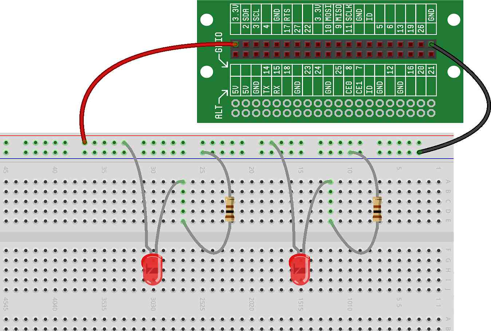
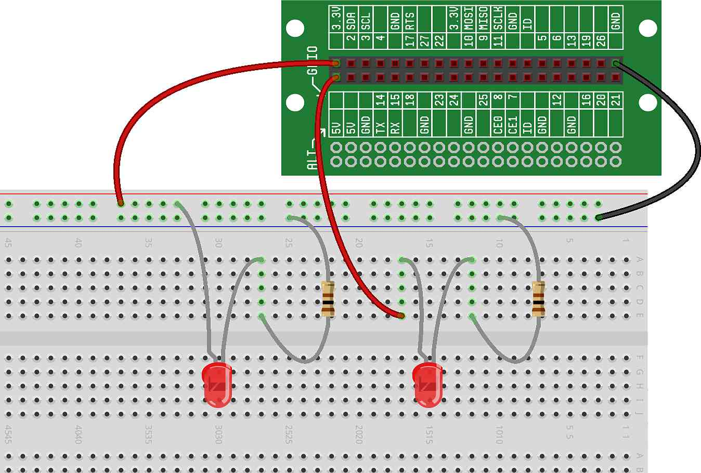

In our concept, we discussed Ohm's Law, which
defines the relationship between voltage, current and resistance. In this
project, we're going to play around with different voltages, currents and
resistances in order to test Ohm's Law and see how it works in a real
circuit.
To test Ohm's Law concepts, we're going to start with the LED circuit we
built previously:

We'll change the voltage and resistance in the circuit, and see how it
affects the current. Because we don't have any good tools to measure the
amount of current flowing through the circuit, we'll rely on the LEDs to
indicate how much current is flowing — in general, the less current that
flows through an LED, the less bright it will appear; the more current
flowing, the brighter it will appear (keep in mind that too much current will
cause the LED to break...but we won't let that happen here).
Here's a reminder of Ohm's Law:
Voltage =
Current x Resistance
By plugging in different numbers, we can see that:
-
For a resistance that doesn't change, if we double the voltage, the
current will double. And, as we discussed above, if the current doubles
(increases) in our circuit, the LED will be brighter.
-
Alternatively, for a voltage that doesn't change, if we double the
resistance, the current will be cut in half. And, as we discussed above, if
the current is cut in half (decreases) in our circuit, the LED will be
dimmer.
With those ideas in mind, let's jump into our project!
We're going to start by building two identical LED circuits on the
breadboard. Then, we'll experiment with changing the voltage and resistance
through each of these circuits and see how it affects the current (the LED
brightness). The reason for building two identical circuits is so we can
change one of them, and then compare the LED brightness of the changed
circuit to the LED brightness of the unchanged circuit.
Build two identical LED circuits.
Our two identical LED circuits will each use a 100 ohm resistor, just like
the circuit we built previously. Here is what those two circuits should look
like: 
Once the circuit is wired, both LEDs should be lit and each one should be
just as bright as it was in the previous project.
Note: It may appear that this is just one big circuit
with two LEDs and two resistors, but it only looks that way because we are
using a single wire from 3.3V power and a single wire to ground. Both circuits
are being powered from the red rail and are grounded to the blue rail, but
they are completely separate circuits. In fact, you'll see that if you remove
either of the LED/resistor pairs (either circuit), the other one continues to
work exactly as it should.
In one circuit, change the resistance.
Now that we have our two circuits wired, it's time to start playing with
the resistance. For one of the circuits (we've chosen the circuit on the
right in the diagram below), let's change the resistor from 100 ohms to 1000
ohms (refer back to the resistor color codes in
if you have any questions about which resistors to use):
You should see that the LED with the larger resistor (the circuit with the
higher resistance) has gotten noticeably dimmer than the LED attached to the
smaller resistor (the circuit with the lower resistance). In this case, we've
increased the resistance by 10 times, which — according to Ohm's Law — means
we've decreased the current by 10 times. Decreasing the current makes the LED
dimmer.
In one circuit, change the voltage.
Next, let's change both resistors to 1000 ohms.. We'll once again have two
identical circuits, but now they will be noticeably dimmer than before. We
use 1000 ohms in this step because the changes we're about to make will be
more noticeable when the LEDs are dimmer (not near their maximum
brightness).
Now, for one of the circuits (again, we've chosen the circuit on the right
in the diagram below), let's change the voltage from 3.3V to 5V. We do this
by moving the beginning of the circuit off the red power rail (so that the
circuit is no longer being powered by the 3.3V on the red rail), and then
powering that circuit using a wire from one of the 5V pins on the Lid
Connector board.
Here is what our circuits should now look like: 
You should see that the LED with the higher voltage (5V) has gotten
slightly brighter than the LED with the lower voltage (3.3V). In this case, we've
increased the voltage, which — according to Ohm's Law — means we've increased
the current. Increasing the current makes the LED brighter.